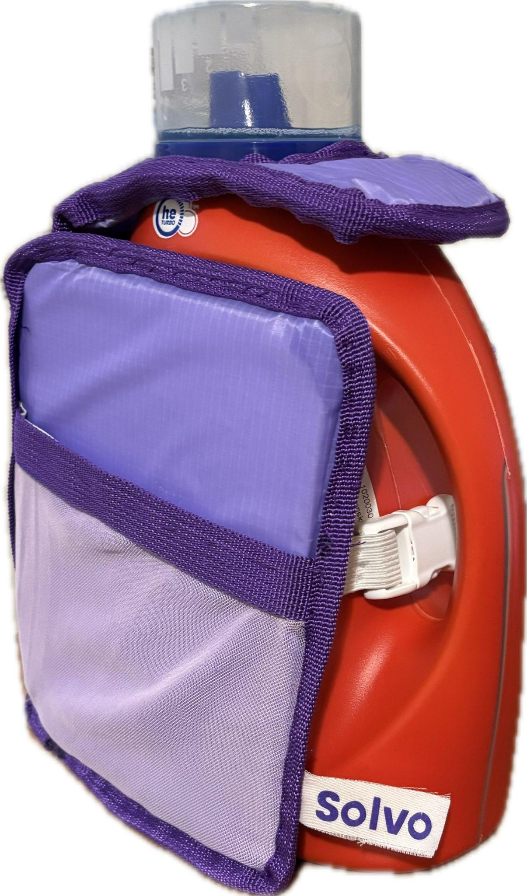
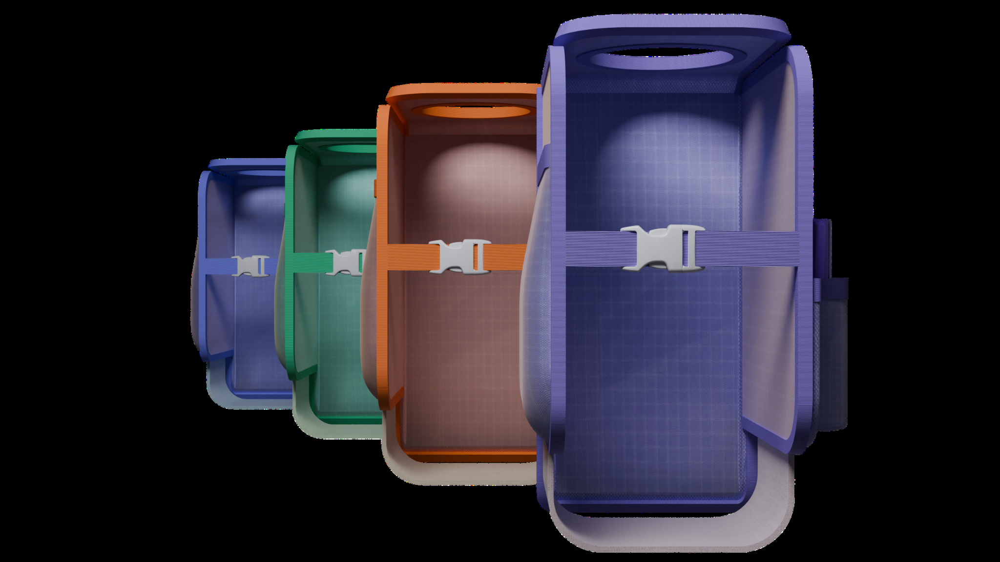
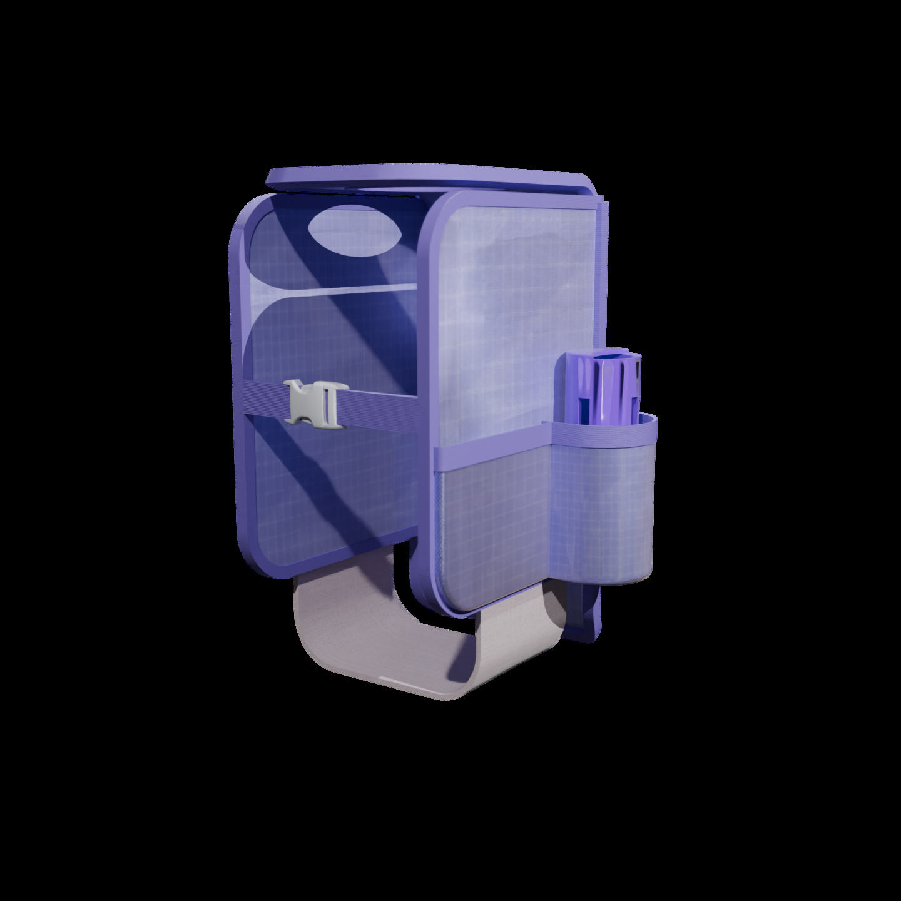
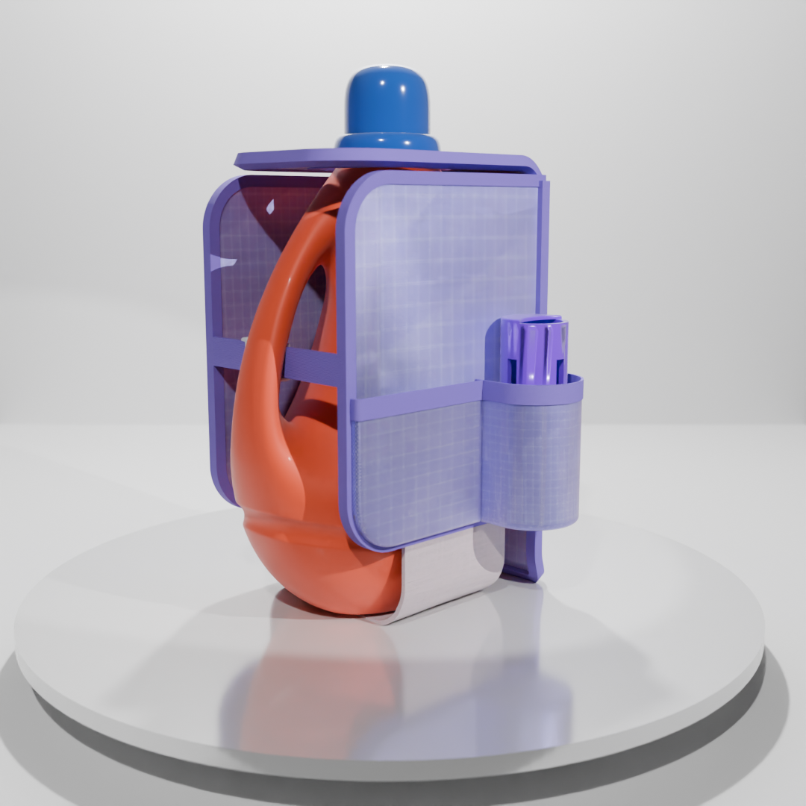
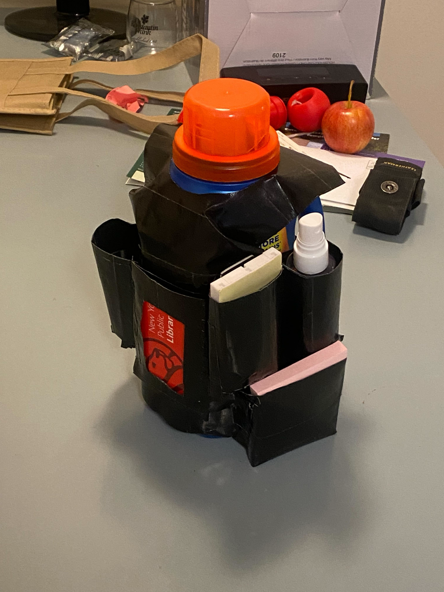
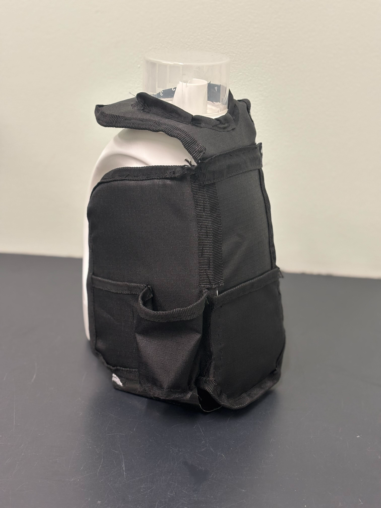
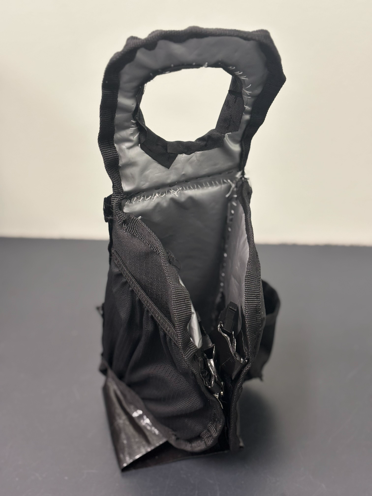
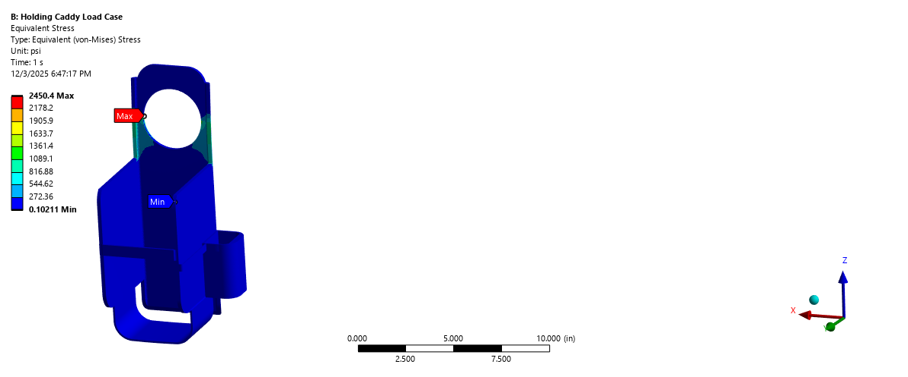
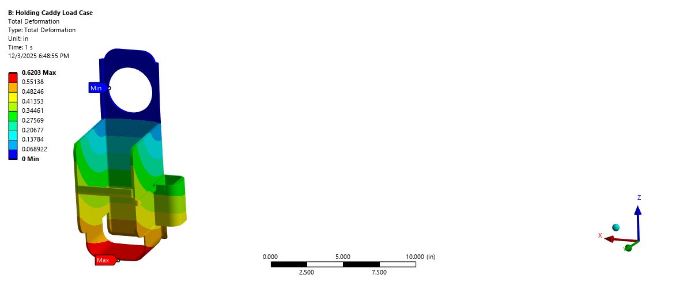
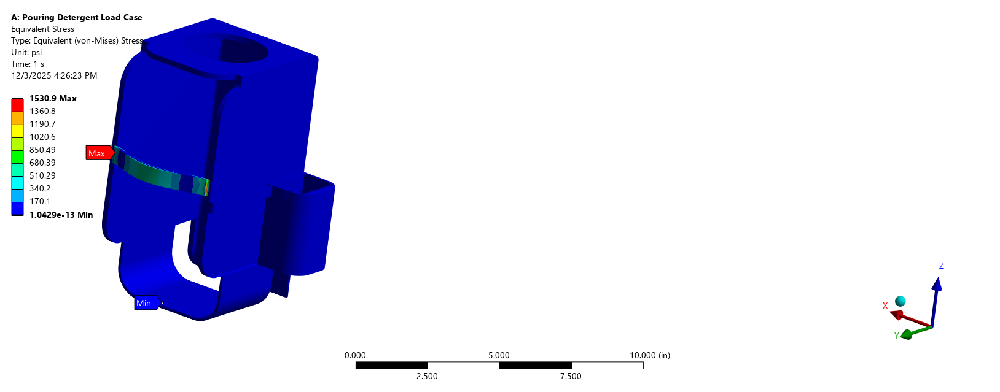

TumbleTote — Laundry Caddy
Designed, analyzed, and fabricated a portable laundry caddy through the full product development cycle — from empathy research and conjoint analysis to hand calculations, FEA, and a sewn nylon prototype.
Overview
University students who use shared laundry rooms face a recurring logistical problem: carrying a detergent bottle alongside dryer sheets, quarters, stain remover, and scent beads — often up stairs and through heavy doors — typically results in forgotten items and repeated trips. The TumbleTote is a weather-resistant nylon caddy that wraps around a standard detergent bottle via an elastic buckle strap, consolidating all laundry supplies into a single, one-handed carry.
The caddy's handle loops over the detergent bottle's cap and spout; elastic straps with a side-release buckle secure the base around the underside of the bottle handle. For pod users, the buckle releases and the caddy converts to a standalone bag. Magnetic closures on the outer pockets allow quick, one-handed access during a laundry run.





Product Features & Requirements
Customer requirements were derived from empathy fieldwork and an Analytic Hierarchy Process (AHP). The top-weighted requirements drove all major design decisions:
- Machine washable — withstands regular wash cycles without loss of shape or function
- Durable — resists wear from repeated attachment and detachment cycles
- Stain resistant — ripstop nylon and foam construction sheds detergent and water
- Compatibility — elastic strap system accommodates a range of standard detergent bottle sizes
- Pocket access — magnetic closures allow one-handed retrieval of frequently used items
- Carrying comfort — caddy does not obstruct grip on the bottle handle
- Stability — items remain secured in pockets when the bottle is tilted for pouring
Quarter Dispenser
A spring-loaded quarter dispenser is integrated into a dedicated side pocket, designed to hold up to 44 quarters (~$11). Spring selection was driven by hand calculation: the combined weight of 44 quarters is approximately 0.55 lbf. With a desired compressed length of 3 inches, the required spring constant is k = F/x = 0.55 / 3 ≈ 0.183 lbf/in, matched to a commercially available McMaster-Carr spring.
Engineering Parameters
Design Methodology
House of Quality & TRIZ
The team built a House of Quality mapping seven customer requirements against the six engineering parameters above, identifying the highest-priority contradictions: weight vs. stiffness, size vs. stability, and material roughness vs. washability. These contradictions were addressed using TRIZ principles:
- Segmentation — divided the body into distinct pockets so that each compartment is independently accessible without disrupting others
- Local quality — reinforced the base and strap attachment points with durable materials while keeping the main body lightweight
- Flexibility — adjustable elastic straps accommodate different bottle geometries; magnetic pocket closures adapt to different usage modes
- Combining — a single nylon/foam/rubber sandwich layer delivers water resistance, structural stiffness, and a smooth surface finish simultaneously
Conjoint Analysis
A choice-based conjoint survey was distributed to Cornell students to validate design priorities. Key findings:
- Ease of carrying and secure attachment to the detergent bottle were the most valued attributes
- An elastic buckle outperformed velcro and fixed straps in perceived security and adjustability
- Liquid-resistant nylon scored highest on material preference due to washability and durability
- Students preferred two medium pockets plus one small pocket over higher pocket counts
- Magnetic and zipper closures scored nearly equally — magnetic was selected for its one-handed convenience
These results directly validated the elastic buckle, multi-pocket layout, and nylon material selection before any physical material was purchased.
Prototype Evolution
Prototype 1 — Duct Tape Form Study
The first prototype was constructed entirely from duct tape to rapidly establish overall dimensions, pocket placement, and the bottle-attachment interaction. It featured five pockets and adjustable buckle straps, with a duct tape base strap supporting the bottle from underneath. The goal was ergonomics and interaction testing — not durability.


Prototype 2 — Nylon & Foam Construction
After user feedback indicated too many pockets, the team reduced the pocket count and switched to a lunchbox-style nylon material with a thin inner foam layer. The foam sandwich increased stiffness while preserving flexibility, allowing the caddy to hold its shape as a standalone bag. This prototype tested pocket depth, pocket closure methods (zipper vs. magnetic), and standalone-bag usability — the two-mode operation that became the product's defining feature.


Final Prototype
The final version replaced 3D-printed prototype buckles with commercial 0.75" side-release plastic buckles and elastic latex fabric straps. All seam edges received trim for structural integrity and appearance. The quarter dispenser was finalized with a commercially sourced spring (k ≈ 0.183 lbf/in), and the nylon body was confirmed to be machine washable.
Mechanical Analysis
Elastic Strap Hand Calculation
The elastic band tension when stretched around a standard detergent bottle was calculated using the elastic modulus formula F = EA·ΔL/L₀, where:
- Original length L₀ = 3.8 in
- Stretch ΔL = 2.5 in
- Cross-sectional area A = 0.75 in × 0.04 in = 0.03 in²
- Young's modulus E = 200 psi (elastic latex fabric)
This gives F = 200 × 0.03 / 3.8 × 2.5 = 3.95 lbf, which was used as the applied load in the Ansys FEA for the bottle-attached load case.
FEA — Load Case 1: Holding the Caddy
The first FEA load case simulated a user carrying the caddy without a bottle — applicable to pod users or during the drying cycle. Conservative item weights were summed: 10 detergent pods (0.507 lbf) + 5 dryer balls (0.66 lbf) + stain remover (1.56 lbf) = 2.73 lbf, rounded up to 3 lbf for conservatism. An additional 0.6 lbf load was applied at the quarter dispenser pocket.


FEA — Load Case 2: Pouring Detergent
The second load case modeled the caddy attached to the bottle while the user tilts it to pour. The 3.95 lbf elastic strap tension was applied along with a 0.6 lbf quarter dispenser load and an estimated 2 lbf from items in the front pockets shifting as the bottle tilts.

Structural Summary
Load Case 1 (holding): Max stress 2,450 psi — factor of safety 1.22 vs. nylon 40D yield strength of 3,000 psi.
Load Case 2 (pouring): Max stress 1,531 psi — factor of safety 1.96.
Both cases used conservative loads, so actual in-service safety margins are higher. The critical constraint is the handle opening in load case 1, which could be reinforced with additional trim material in future iterations.
Market & Business Case
The primary target demographic is first-year college students and their parents purchasing quality-of-life items before move-in. The U.S. college freshman market represents approximately 2.4 million potential customers annually, concentrated in the August–September back-to-school window (confirmed via Google Trends data for "shower caddy" and "bathroom caddy for college" searches).
Pricing & Costs
A Bass Model diffusion analysis (p = 0.012, q = 0.50) projected unit sales growing from ~38,000 in Year 1 to ~525,000 in Year 5. A parallel Amazon review-rate analysis of "bathroom caddy for college" listings estimated ~520,000 annual shower caddy sales on Amazon alone, supporting the Bass Model projections as reasonable.
Manufacturing Plan
The fabric body uses ripstop nylon, mesh, and foam cut by band-knife stack cutting and assembled on a progressive sewing line with QC checks between operations. The spring-loaded quarter dispenser body and cap are injection-molded for repeatable surface finish — critical for the bayonet-lock mechanism between the lid and barrel. Side-release buckles and elastic straps are purchased COTS and attached as the final assembly step.